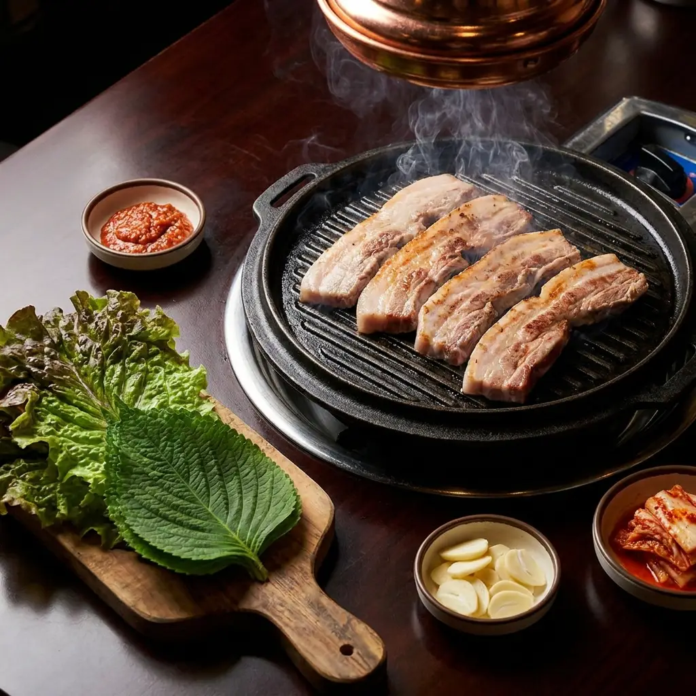
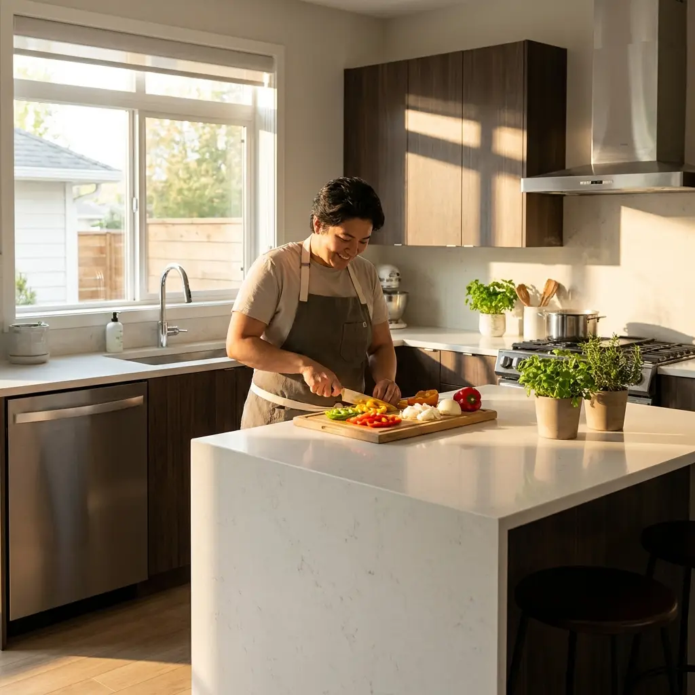

시
Gratuit · Chronométré · Style TOPIK
Examen blanc
façon TOPIK
Deux vrais formats d'examen, comme le TOPIK officiel, choisis ton niveau pour t'entraîner dans des conditions proches du vrai test.


TOPIK I · 초급
Niveaux 1-2
Débutant. Écoute et lecture uniquement, comme le vrai TOPIK I, pas d'épreuve d'écriture à ce niveau.
듣기 · 13 min
읽기 · 22 min
51 questions tirées au sort · ~35 min
TOPIK II · 중고급
Niveaux 3-6
Intermédiaire à avancé. Écoute, écriture (complétion + 2 rédactions, comme le vrai 51-54번) et lecture & grammaire.
듣기 · 10 min
쓰기 · 15 min
읽기 · 16 min
31 questions notées + 4 pratiques d'écriture · ~41 min
À noter : ceci est un entraînement gratuit inspiré du format TOPIK, pas un examen officiel, le niveau donné en fin de test est une estimation indicative, pas un score TOPIK réel. La partie écriture du TOPIK II est une pratique libre avec réponse modèle à comparer : la correction automatique d'une rédaction libre n'est pas fiable, donc elle n'est pas notée. Une épreuve orale te manque (comme au SKA ou au TOPIK 말하기) ? Essaie Speaking Practice.
Partie suivante
Estimation
Résultat
0%
Score
Estimation indicative basée sur ce mini-examen d'entraînement, pas un score TOPIK officiel. Le vrai TOPIK évalue aussi l'expression écrite (TOPIK II) et dure bien plus longtemps.